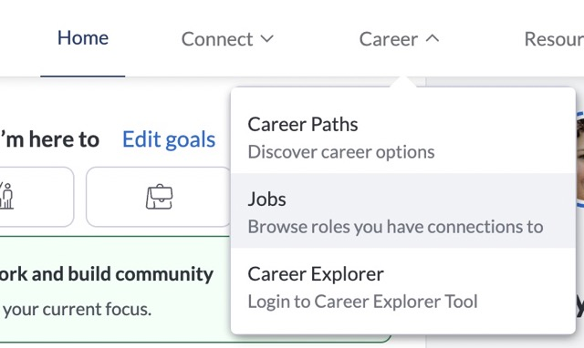

Main Menu
So, where we can find the alumni?
Let's open Church Education System (CES).
There are two ways to find alumni throught CES:
- Use Search Engine
- Search from Jobs
-Use Search Engine
From the header, click on "Connect" and then select "Explore the Community."

Use the search bar to find alumni.
Important!
Pay attention to the green icons in the profile pictures:
- Mortarboard icon:
- Alumni
- Book icon:
- Current student
- Person icon:
- Friend of alumni
Once you select a profile, see if there is a lighting mark next to the mortarboard icon.
This indicates that the person is more likely to respond to messages.
Also, look for “Expertise” and find the person can help with.
While you can massage to anyone, those who list expertise are more likely to provide assistance.
-Search from Jobs
From the header, click on "Career" and select "Jobs." Search for a job that interests you.
Then, scroll down the job description and find someone who already worked there. If the people you selected is unavailable for that time, you won’t be able to massage them. If so, press profile and press “Get notified” to send a massage when they become available.